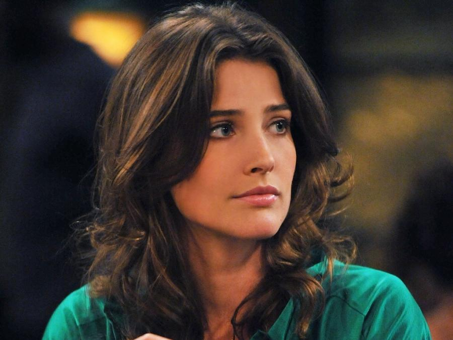

Robin Charles Scherbatsky, Jr. is one of the five main characters of How I Met Your Mother, portrayed by Canadian actress Cobie Smulders. Her dad is Robin Scherbatsky Sr., and she has a younger sister, named Katie. She is a Scotch-drinking, cigar-smoking, gun-toting Canadian pop-star-turned-journalist-turned-morning-show-host. In the finale, it is shown that by 2020 she had risen to stardom at World Wide News as their foreign correspondent, but recently decided to take a news anchor position and settle down in New York again. Robin befriended the gang in 2005 after an awkward date with Ted Mosby. She is Lily's best friend and Ted's ex-roommate and ex-girlfriend. In 2013, she marries Barney, but they get divorced in 2016. In 2030, six years after Ted's wife dies, he shows up to her apartment with a blue French horn, and the show ends with her smiling down at him from her window.